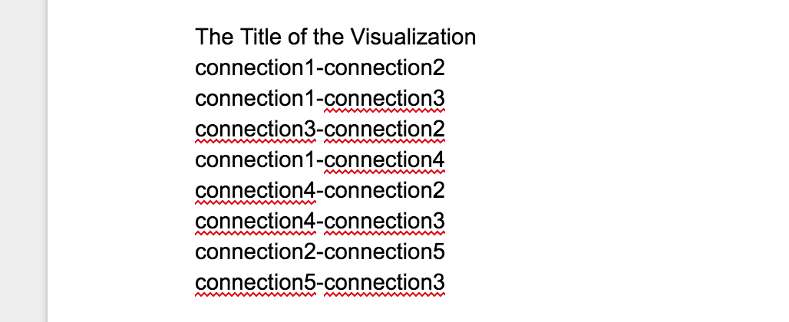
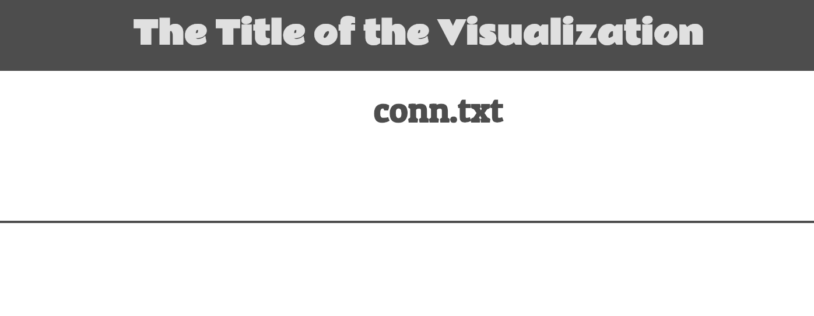
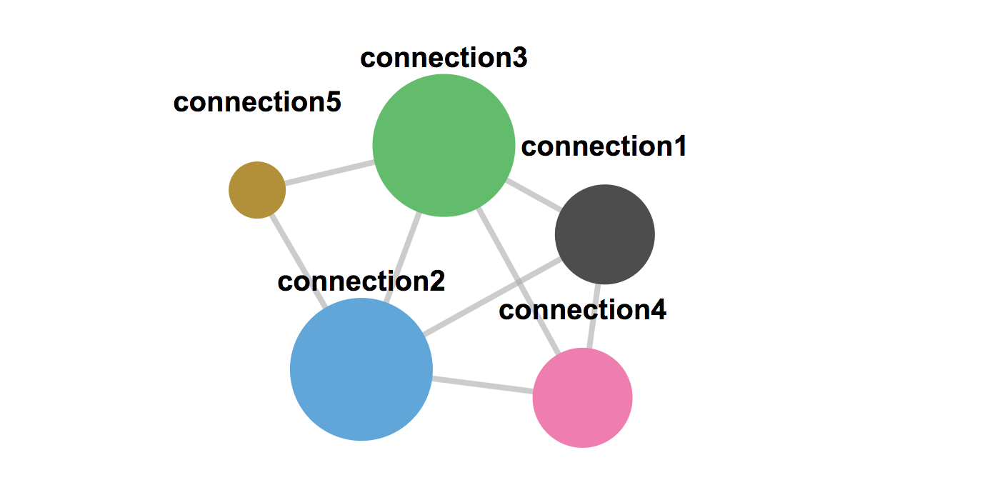
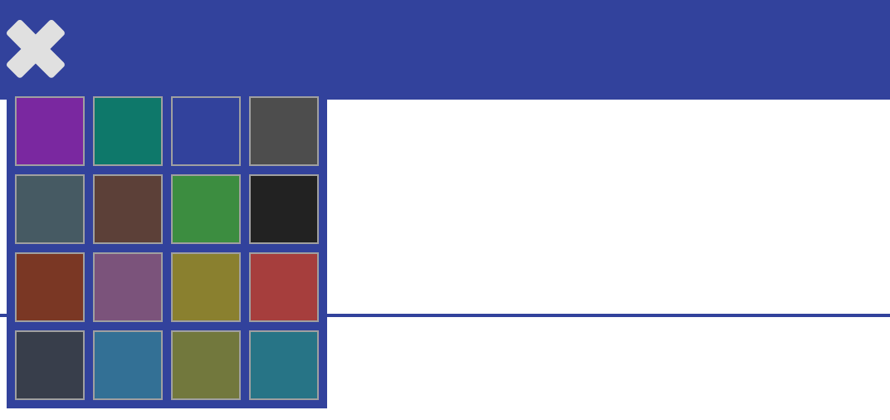

How to use the visualization
-
Create a .txt file preferable with google docs and the file should be in the following format

-
Select "Choose File" to select the File to upload and then chose your desired file
-
After choosing your file, click the "Upload File" button.
-
The title of the visualization changes to the title of your specific visualization which you specified in
the file you uploaded as shown in the image where conn.txt is the name of the file I uploaded

-
The "No file uploaded yet" prompt on the top center of the page below the menu bar changes to show the name of your file
-
The "Please select a file to visualize" prompt on the page disappears making way for the network/nodes as shown below

-
The nodes might appear iat the top left corner, just click in that area and they will move to the center of the visualization
-
You can click and drag to move the nodes around
-
The colors of the nodes are randomly assigned and hold no significant purpose other than aesthetics
-
Each node has a name showing the name of the connection that you specified in the file
-
Hovering above a node, highlights neighboring nodes as well as the links that connect the nodes
-
The bigger the circle, the more the number of connections it has for example in the image above,
connection2 and connection3 have the largest number of connections whilst connection5 with only two
connections has the lowest number of connections
-
The colors of the nodes are randomly assigned and hold no significant purpose other than aesthetics
-
You can use the color picker on the top left side of the menu bar to chose a theme for your visulization

Back To Visualization